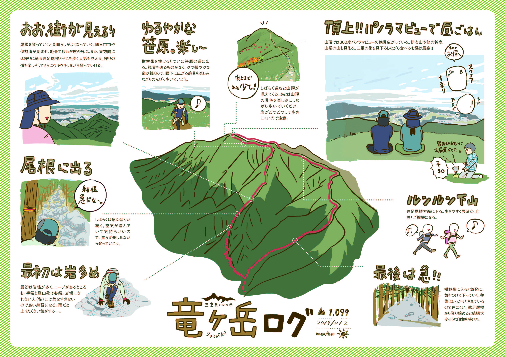

三連休に三重県いなべ市の竜ヶ岳に行ってきました！
この日は非常に天気が良く、始終ルンルンの登山でした。頂上では三重県の街の中を見ながらランチ。
ほかの登山客もこの頂上からのランチを楽しみにしていたようで、すごく平和な景色が見られました。
もちろん帰りも景色よく、始終楽しかったです。
また、夜泊まった尾高キャンプ場も三重県の夜景が見えたのですが、これがまた超絶景…！！！！！
キャンプ場を運営する奥さんによると、「ここまできれいな夜景はそんなにない、ラッキーよ！」とのこと。
三重の夜景を堪能しなました。本当に気持ちがよかったです。
竜ヶ岳 金山尾根→遠足尾根(三重県いなべ市)

2019/11/2
